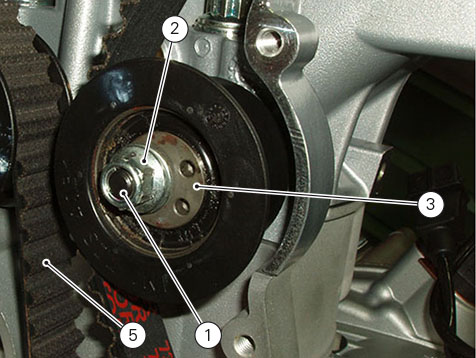
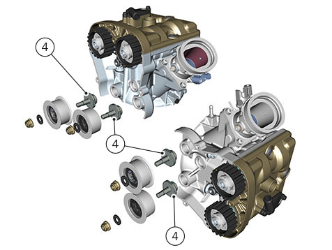

Removing the tensioner pulley/timing belt
Remove the seat (
Removing the seat
).
Remove the rear right side body panel (
Removing side body panels and tail guard
).
Remove the front half-fairings (
Removing the front half-fairing
).
Remove the tank fairing (
Removing the tank fairings
).
Remove the fuel tank (Removing the fuel tank
).
Remove the filter box (
Removing filter box and throttle body
).
Disconnect the secondary air hose (
Removing the secondary air system
).
Remove the timing outer covers (
Removing the timing outer covers
).
Remove the oil breather expansion reservoir (
Removing the oil breather tank
).
Loosen the nut (1) and remove the washer (2) and the tensioner pulley (3) from the pin (4) on the cylinder head.
Remove the timing belt (5) from the piston-cylinder assy.
Important
If the belts are to be re-used, mark the direction of rotation with an arrow and also mark the piston-cylinder assy they belong to.
Repeat the procedure for the other piston-cylinder assy.

